건설기계설비기사 (2004-08-08 기출문제)
1과목: 재료역학
1. 지름 6 mm인 강철선 150 m가 수직으로 매달려 있을 때 자중에 의한 처짐량은 몇 mm 인가? (단, E = 200 GPa, 강철선의 비중량은 7.7×104 N/m3)
- 3.02
- 3.17
- 3.58
- 4.33
(정답률: 알수없음)

2. 길이가 3 m인 원형 단면축의 지름이 20 mm 일 때 이 축이 비틀림 모멘트 100 Nㆍm를 받는다면 비틀어진 각도는? (단, 전단탄성계수 G = 80 GPa 이다.)
- 0.24°
- 0.52°
- 4.56°
- 13.7°
(정답률: 알수없음)
3. 직경이 d인 짧은 환봉(丸棒)의 축방향에서 P인 편심 압축하중이 작용할 때 단면상에서 인장 응력이 일어나지 않는 a의 범위는?
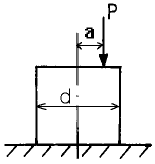
- 반경이 d/8인 원내에
- 반경이 d/8인 원밖에
- 반경이 d/4인 원내에
- 반경이 d/4인 원밖에
(정답률: 알수없음)
4. 그림과 같이 집중하중 P를 받는 외팔보가 있다. 모멘트 선도가 그림과 같을 때 B점에서의 처짐은? (단, E는 탄성계수, I는 단면 2차 모멘트이다.)
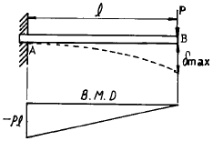
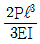
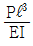
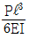
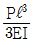
(정답률: 알수없음)
5. 그림과 같은 두 개의 판재가 볼트로 체결된 채 500 N의 인장력을 받고있다. 볼트의 중간단면에 작용하는 평균 전단응력은? (단, 볼트의 지름은 1 cm이다.)
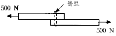
- 5.25 MPa
- 6.37 MPa
- 7.43 MPa
- 8.76 MPa
(정답률: 알수없음)
6. 보의 전 길이에 걸쳐 균일 분포하중이 작용하고 있는 단순보와 양단이 고정된 양단 고정보에서 중앙에서의 처짐량의 비는?
- 2:1
- 3:1
- 4:1
- 5:1
(정답률: 알수없음)
7. 다음 그림과 같은 균일 단면환봉이 축방향에 하중을 받고 평형이 되어 있다. Q = 3P 가 되려면 W는 얼마인가?
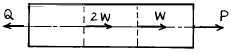
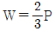
- W = 3P
- W = P/3
- W = 2P
(정답률: 알수없음)
8. 지름 30 mm의 원형 단면이며, 길이 1.5 m인 봉에 85 kN의 축방향 하중이 작용된다. 탄성계수 E = 70 GPa, 프와송비 v = 1/3일 때, 체적증가량의 근사값은 몇 mm3 인가?
- 30
- 60
- 300
- 600
(정답률: 알수없음)
9. 그림과 같이 하중 P가 작용할 때 스프링의 변위 δ 는? (이때 스프링 상수는 k 이다.)
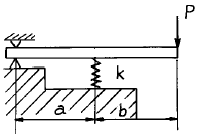
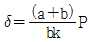
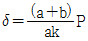
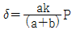
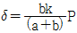
(정답률: 알수없음)
10. 다음과 같은 부재의 온도를 △T만큼 증가시켰을 때, 부재 내에 발생하는 응력은? (단, 탄성계수는 E, 열팽창계수는 α이다.)
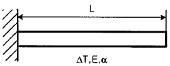
- 0
- α△T
- Eα△T
- △TL/AE
(정답률: 알수없음)
11. 공학적 변형률(engineering strain) e와 진변형률(true strain) ε 사이의 관계식으로 맞는 것은?
- ε = ln(e+1)
- ε = eln(e)
- ε = ln(e)
- ε = 3e
(정답률: 알수없음)
12. 탄성계수 E, 전단 탄성계수 G 인 재료로 되어 있는 지름 D이고, 길이 ℓ 인 둥근봉이 비틀림모멘트 T를 받고 있다. 이때 이 봉속에 저축되는 변형에너지는?
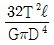
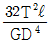
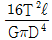
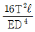
(정답률: 알수없음)
13. 길이가 ℓ = 6 m인 단순보 위에 균일 분포하중 ω = 2000 N/m가 작용하고 있을 때 최대굽힘 모멘트의 크기는?
- 7000 Nㆍm
- 8000 Nㆍm
- 9000 Nㆍm
- 10000 Nㆍm
(정답률: 알수없음)
14. 바깥지름 d, 안지름 d/3인 중공원형 단면의 굽힘에 대한 단면계수는?
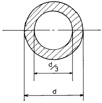
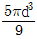
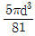
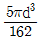
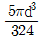
(정답률: 알수없음)
15. 길이 90 cm, 지름 8 cm의 외팔보의 자유단에 2 kN의 집중하중이 작용하는 동시에 150 N.m의 비틀림 모멘트도 작용할때 외팔보에 작용하는 최대 전단응력은 몇 MPa 인가?
- 15
- 16
- 17
- 18
(정답률: 알수없음)
16. 다음 중 체적계수(bulk modulus)를 나타낸 식은? (단, E는 탄성계수, G는 전단탄성계수, v는 포아송비이다.)
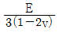
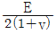
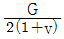
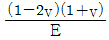
(정답률: 알수없음)
17. 길이가 60 cm이고 단면이 1 cm × 1 cm인 알미늄 봉에 인장하중 P = 10 kN이 걸리면 인장하중에 의해 늘어난 길이는? (단, 알루미늄의 E = 20 GPa)
- 1.5 mm
- 3 mm
- 6 mm
- 2 mm
(정답률: 알수없음)
18. 길이가 50 mm 인 원형단면의 철강재료를 인장하였더니 길이가 54 mm 로 신장되었다. 이 재료의 변형률은?
- 0.4
- 0.8
- 0.08
- 1.08
(정답률: 알수없음)
19. 그림의 얇은 용기가 균일 내압을 받고 있으며, 축 방향의 응력을 σx, 원주(圓周) 방향의 응력을 σy라고 할 때 σx/σy 의 값으로 옳은 것은? (단, 용기원통의 반지름은 r이다.)
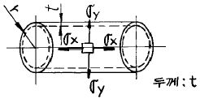
- 1/2
- 2
- 4
- 1/4
(정답률: 알수없음)
20. 사각형 단면의 전단응력 분포에 있어서 최대 전단응력은 전단력을 단면적으로 나눈 평균 전단응력 보다 얼마나 더 큰가?
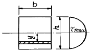
- 30%
- 40%
- 50%
- 60%
(정답률: 알수없음)
2과목: 기계열역학
21. 이상기체의 내부에너지 및 엔탈피는?
- 압력만의 함수이다.
- 체적만의 함수이다.
- 온도만의 함수이다.
- 온도 및 압력의 함수이다.
(정답률: 알수없음)
22. 온도 5℃ 와 35℃ 사이에서 작동되는 냉동기의 최대 성능계수는?
- 10.3
- 5.3
- 7.3
- 9.3
(정답률: 알수없음)
23. 폐쇄계 내에 있는 포화액을 그 압력을 일정하게 유지하면서 열을 가하여 포화증기로 만들 경우 다음 사항 중 틀린것은?
- 온도가 증가한다.
- 건도가 1이 된다.
- 비체적이 증가한다.
- 내부에너지가 증가한다.
(정답률: 알수없음)
24. 1 kg 의 헬륨이 1 atm 하에서 정압가열 되어 온도가 300K에서 350K 로 변하였을 때, 엔트로피(entropy)의 변화량은 몇 kJ/㎏ㆍK 인가? (단, h = 5.238 T 의 관계를 갖는다. h 의 단위는 kJ/kg, T 의 단위는 K 이다.)
- 0.694
- 0.756
- 0.807
- 0.968
(정답률: 알수없음)
25. 온도가 150℃ 인 공기 3 kg 이 정압 냉각되어 엔트로피가 1.063 kJ/K 만큼 감소되었다. 온도 20℃ 인 공기로 방출시켜야 할 열량은 몇 kJ 인가? (단, 공기의 정압비열은 1.01 kJ/kgㆍ℃ 이다.)
- 379.4
- 715.0
- 27.2
- 538.7
(정답률: 알수없음)
26. 어떤 냉장고에서 질량유량 80 kg/hr 의 냉매 R-134a 가 17kJ/kg 의 엔탈피로 증발기에 들어가 엔탈피 36 kJ/kg 가 되어 나온다. 이 냉장고의 용량은?
- 1220 kJ/hr
- 1800 kJ/hr
- 1520 kJ/hr
- 2000 kJ/hr
(정답률: 알수없음)
27. 기체혼합물의 체적분석결과가 아래와 같을 때 이 데이터로부터 혼합물의 질량기준 기체상수(kJ/kgㆍK)를 구하면? (단, 일반기체상수
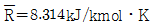
이고, 원자량은 C = 12, O = 16, N = 14이다.)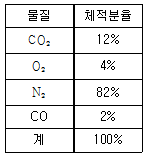
- 0.2764
- 0.3325
- 0.4628
- 0.5716
(정답률: 알수없음)
28. 수은의 비중량과 밀도는 각각 대략 얼마인가?
- 13600 kg/m3, 133000 N/m3
- 133000 N/m3, 13600 kg/m3
- 13600 N/m3, 133000 kg/m3
- 133000 kg/m3, 13600 N/m3
(정답률: 알수없음)
29. 효율이 85% 인 터빈에 들어갈 때의 증기의 엔탈피가 3390kJ/kg 이고, 가역 단열과정에 의해 팽창할 경우에 출구에서의 엔탈피가 2135 kJ/kg 이 된다고 한다. 운동에너지의 변화를 무시할 경우 이 터빈의 실제 일은 몇 kJ/kg 인가?
- 1476
- 1255
- 1067
- 906
(정답률: 알수없음)
30. 실린더 내의 공기가 200 kPa, 10℃ 상태에서 600 kPa 이 될 때까지 "PV1.3 = 일정" 인 과정으로 압축된다. 공기의 질량이 3 kg 이라면 이 과정 중 공기가 한 일은?
- -23.5 kJ
- -235 kJ
- 12.5 kJ
- 125 kJ
(정답률: 알수없음)
31. 이상기체 1 kg 을 300 K, 100 kPa 에서 500 K 까지 "PVn= 일정" 의 과정(n = 1.2)을 따라 변화시켰다. 기체의 비열비는 1.3, 기체 상수는 0.287 kJ/kgㆍK 라고 가정한다. 이 기체의 엔트로피 변화량은?
- -0.244 kJ/K
- -0.287 kJ/K
- -0.344 kJ/K
- -0.373 kJ/K
(정답률: 알수없음)
32. 이상 냉동 사이클의 자료가 다음과 같을 때 이 사이클의 성능계수(COP)는?
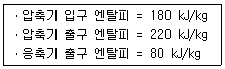
- 2.20
- 2.50
- 2.75
- 3.50
(정답률: 알수없음)
33. 10 냉동톤의 능력을 갖는 카르노 냉동기의 응축 온도가 25℃, 증발 온도가 -20℃ 이다. 이 냉동기를 운전하기 위하여 필요한 이론 동력은 몇 kW 인가? (단, 1 냉동톤은 3.85 kW 이다.)
- 6.85
- 4.65
- 2.63
- 1.37
(정답률: 알수없음)
34. 다음 상태량 중에서 강성적 상태량이 아닌 것은?
- 온도
- 비체적
- 압력
- 내부에너지
(정답률: 알수없음)
35. 상온의 감자를 가열하여 뜨거운 감자로 요리하였다. 감자의 에너지 변동 중 맞는 것은?
- 위치에너지가 증가
- 엔탈피 감소
- 운동에너지 감소
- 내부에너지가 증가
(정답률: 알수없음)
36. 물질이 액체에서 기체로 변해 가는 과정 중 포화에 관련된 다음 설명 중 잘못된 것은?
- 물질의 포화 온도는 주어진 압력 하에서 그 물질의 증발이 일어나는 온도이다.
- 물질의 포화 온도가 올라가면 포화 압력도 올라간다.
- 액체의 온도가 현재 압력에 대한 포화 온도보다 낮은 때 그 액체를 압축 액체 또는 과냉 액체라 한다.
- 어떤 물질이 포화 온도 하에서 일부는 액체로 그리고 일부는 증기로 존재할 때, 전체 질량에 대한 액체 질량의 비를 건도로 정의한다.
(정답률: 알수없음)
37. 다음 설명 중 틀린 것은?
- 오토사이클의 효율은 압축비(compression ratio)의 함수이다.
- 오토사이클은 전기점화 내연기관의 기본이 되는 이상적인 사이클이다.
- 디젤사이클은 압축점화 내연기관의 기본이 되는 이상적인 사이클이다.
- 동일한 압축비에 대해서 디젤 사이클의 효율이 오토사이클의 효율보다 크다.
(정답률: 알수없음)
38. 증기터빈 발전소에서 터빈 입출구의 엔탈피 차이는 130kJ/kg이고 터빈에서의 열손실은 10 kJ/kg이었다. 이 터빈에서 얻을 수 있는 최대 일은 얼마인가?
- 10 kJ/kg
- 120 kJ/kg
- 130 kJ/kg
- 140 kJ/kg
(정답률: 알수없음)
39. 일정한 토크 100 Nm 가 걸린 상태에서 회전하는 축이 있다 이 축을 50 회전시키는데 필요한 일은 얼마인가?
- 5.0 kW
- 5.0 kJ
- 31.4 kW
- 31.4 kJ
(정답률: 알수없음)
40. 열과 일에 대한 설명 중 맞는 것은?
- 열과 일은 경계현상이 아니다.
- 열과 일의 차이는 내부에너지만의 차이로 나타난다.
- 열과 일은 항상 양의 수로 나타낸다.
- 열과 일은 경로에 따라 변한다.
(정답률: 알수없음)
3과목: 기계유체역학
41. 깊이가 10 cm 이고 직경이 6 cm 인 물컵에 정지 상태에서 7 cm 의 물이 담겨있다. 이 컵을 회전반 위의 중심축에 올려놓고 회전시켜 물이 넘치게 될 때 회전반의 각속도는 몇 rad/s 인가? (단, 물의 밀도는 1000 kg/m3 이다.)
- 345
- 36.2
- 72.4
- 690
(정답률: 알수없음)
42. 그림과 같이 용기 안에 물(밀도 ρw = 1000 kg/m3), 기름(밀도 ρoil = 800 kg/m3), 공기(압력 Pa = 200 kPa)가 들어있다. 점 A 에서의 압력은 몇 kPa 인가?
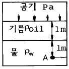
- 218
- 290
- 400
- 380
(정답률: 알수없음)
43. 난류에서 평균 전단응력과 평균 속도구배의 비를 나타내는 점성계수는?
- 유동의 혼합 길이와 평균 속도 구배의 함수이다.
- 유체의 성질이므로 온도가 주어지면 일정한 상수이다
- 뉴튼의 점성법칙으로 구한다.
- 임계 레이놀즈수를 이용하여 결정한다.
(정답률: 알수없음)
44. 동쪽을 x축 방향, 북쪽을 y축 방향으로 하는 2차원 직각 좌표계에서 2 m/s의 일정한 속도로 불어오는 동남풍에 대응하는 속도 포텐셜은?
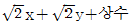
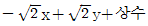
- 2x - 2y + 상수
- 2x + 2y + 상수
(정답률: 알수없음)
45. 어느 문제에 관련되는 차원상수를 포함하는 측정량이 8개이다. 기본단위의 개수가 4개이면 무차원량의 수는?
- 2
- 3
- 4
- 8
(정답률: 알수없음)
46. 점성을 지닌 액체가 지름 4 mm 의 수평으로 놓인 원통형 튜브를 12 × 10-6 m3/s 의 유량으로 흐르고 있다. 길이 1 m 에서의 압력강하는 몇 kPa 인가? (단, 튜브의 입구로부터 충분히 멀리 떨어져 있어서 유체는 축방향으로만 흐르며 유체의 밀도와 점성계수는 ρ = 1.18 × 103 kg/m3, μ = 0.0045 Nㆍs/m2 이다.)
- 7.59
- 8.59
- 9.59
- 10.59
(정답률: 알수없음)
47. 물 위를 3 m/s 의 속도로 항진하는 길이 2 m 인 모형선에 작용하는 조파저항이 54 N 이다. 길이 50 m 인 실선을 이것과 상사한 조파상태인 해상에서 항진시킬 때 조파저항은 약 얼마가 생기는가? (단, 해수의 비중량은 γp = 10075 N/m3)
- 867 N
- 8825 N
- 86 kN
- 867 kN
(정답률: 알수없음)
48. 밀도가 800 kg/m3 인 유체 내에서 소리의 전파속도가 800m/s 라면 이 유체의 체적 탄성계수(bulk modulus)는?
- 640 kPa
- 800 kPa
- 512 MPa
- 410 GPa
(정답률: 알수없음)
49. 안지름 1 cm 의 원관내를 유동하는 0℃ 의 물의 층류 임계 속도는 약 몇 cm/s 인가? (단, 0℃ 인 물의 동점성계수는 0.01794 cm2/s 이다.)
- 0.38
- 3.8
- 38
- 380
(정답률: 알수없음)
50. 몸무게가 750 N 인 조종사가 지름 5.5 m 의 낙하산을 타고 비행기에서 탈출하고 있다. 항력계수가 1.0 이고, 낙하산의 무게를 무시한다면 조종사의 최대 종속도는 약 몇 m/s가 되는가? (단, 공기의 밀도는 1.2 kg/m3 이다.)
- 7.26
- 8
- 5.26
- 10
(정답률: 알수없음)
51. 질량보존의 법칙을 유체에 적용하여 얻어지는 방정식은?
- 연속 방정식
- 운동 방정식
- 베르누이 방정식
- 에너지 방정식
(정답률: 알수없음)
52. 원통수조 속에 넣은 물을 원통과 함께 연직 중심축을 중심으로 ω의 등각속도로 회전 운동시킬 때 반지름 r 인 곳의 수면은 연직 중심 축에서의 수면 보다 얼마만큼 더 높은가?
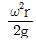
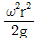
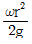
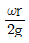
(정답률: 알수없음)
53. 어떤 기름의 점성계수 μ가 1.6 × 10-2 Nㆍs/m2이고 밀도 ρ는 800 kg/m3 이다. 이 기름의 동점성계수 ν는 몇 m2/s 인가?
- 2.0 × 10-2
- 2.0 × 10-3
- 2.0 × 10-4
- 2.0 × 10-5
(정답률: 알수없음)
54. 비중 0.8 인 알콜이 든 U 자관 압력계가 있다. 이 압력계의 한 끝은 피토(pitot)관의 전압부(全壓部)에 다른 끝은 정압부(靜壓部)에 연결하여 피토관으로 기류의 속도를 재려고 한다. U 자관의 읽음의 차가 78.8 mm, 대기압력이 1.0266 × 105Pa abs, 온도 21℃ 일 때 기류의 속도는 (단, 기체상수 R = 287 Nㆍm/kgㆍK)
- 38.8 m/s
- 27.5 m/s
- 43.5 m/s
- 31.8 m/s
(정답률: 알수없음)
55. 다음 중 비압축성 유동에 해당하는 것은?
- u = x2-y2, v = 2xy
- u = 2xy-x2, v = xy-y2
- u = xt+2y2, v = xt3-yt
- u = (x+y)xt, v = (2x-y)yt
(정답률: 알수없음)
56. 속도 3 m/s 로 움직이는 평판에 이것과 같은 방향으로 수직으로 10 m/s 의 속도를 가진 제트가 충돌한다. 분류가 평판에 미치는 힘 F 는 얼마인가? (단, 유체의 밀도를 ρ라 하고 제트의 단면적을 A라 한다)
- F = 10ρA
- F = 100ρA
- F = 7ρA
- F = 49ρA
(정답률: 알수없음)
57. 최고 6 m/s 의 속도로 공기 0.25 kg/s (질량유량)를 흐르도록 하는데 필요한 최소 관지름은 몇 m 인가? (단, 공기는 27℃ 로서 기체상수는 287 Nㆍm/kgㆍK 이며, 2.3 × 105 Pa 의 절대압력 상태에 있다.)
- 0.14
- 1.4
- 0.0156
- 0.156
(정답률: 알수없음)
58. 수평원관(圓管)내에서 유체가 층류유동 할 때의 유량은?
- 압력강하에 반비례한다.
- 지름의 4승에 반비례한다.
- 점성계수에 반비례한다.
- 관의 길이에 비례한다.
(정답률: 알수없음)
59. 점성 계수 1 Poise 와 같은 것은?
- 1 dyne/cmㆍs
- 1 Nㆍs2/m
- 1 dyneㆍs/cm2
- 1 cm2/s
(정답률: 알수없음)
60. 지름 200 mm 인 곧은 주철관 속을 0.1 m3/s 의 기름이 흐르고 있다. 관의 길이가 100 m 일 때 손실수두는 몇 m 인가? (단, 기름의 동점성계수는 0.7 × 10-5 m2/s 이고, 관마찰계수는 0.0234 이다.)
- 6.0
- 7.0
- 8.0
- 9.0
(정답률: 알수없음)
4과목: 유체기계 및 유압기기
61. 소구기관이 소형 어선용(漁船用)으로 많이 사용되는 이유는 무엇 때문인가?
- 열효율이 높기 때문에
- 고속회전에 적합하므로
- 다른 기관보다 압축비가 높기 때문에
- 기관 자체의 역회전이 가능하기 때문에
(정답률: 알수없음)
62. 보기와 같은 유압 잭에서 지름(D)이 D2 = 2D1 일 때 누르는 힘 F1과 F2의 관계를 나타낸 식으로 올바른 것은?
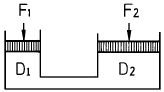
- F2 = F1
- F2 = 2F1
- F2 = 4F1
- F2= (1/4)F1
(정답률: 알수없음)
63. 디젤 기관에서 연료분사의 3대 요건과 관계가 적은 것은?
- 무화(atomization)
- 관통력(penetration)
- 분포(distribution)
- 디젤지수(diesel index)
(정답률: 알수없음)
64. 전자제어 디젤기관(Electronic Controlled Diesel)에서 컴퓨터(ECU)가 제어하는 사항이 아닌 것은?
- 연료 분사시기
- 자기진단 페일세이프
- 흡입 공기량
- 공기 과잉율
(정답률: 알수없음)
65. 작동유가 갖고 있는 에너지를 잠시 저축했다가 이것을 이용하여 완충작용도 할 수 있는 부품은?
- 제어 밸브
- 축압기
- 스테이터
- 유체 커플링
(정답률: 알수없음)
66. 2행정 1실린더 복동 기관에서 제동 평균유효압력이 10kgf/cm2, 실린더 내경이 10 cm, 회전수가 750 rpm, 행정이 12 cm 일 때의 출력은?
- 3.14(PS)
- 1.57(PS)
- 31.4(PS)
- 15.7(PS)
(정답률: 알수없음)
67. 디젤 엔진에서 등압 팽창이 피스톤 행정의 18%동안 일어날 때, 등압 팽창비 σ 을 압축비 ε 로 대치하면 다음 어느 것이 옳은가?
- σ = 0.18(ε-1)+1
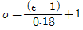
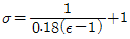
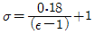
(정답률: 알수없음)
68. 오토사이클 기관에서 이론적인 열효율을 38.3%로 하려고 한다. 비열비(k) = 1.3이라할 때 압축비는 얼마로 하면 되는가?
- 4
- 5
- 6
- 7
(정답률: 알수없음)
69. 보기와 같은 유압기호는 무슨 밸브의 기호인가?
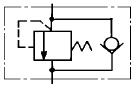
- 카운터 밸런스 밸브
- 무부하 밸브
- 시퀜스 밸브
- 릴리프 밸브
(정답률: 알수없음)
70. 유압펌프(oil Pump)의 소요 축동력 산정에 관련된 설명으로 올바른 것은?
- 펌프 송출량이 일정할 때, 송출 압력에 반비례한다.
- 송출 압력이 일정할 때, 펌프 송출량에 비례한다.
- 송출 단면적이 일정할 때, 송출 속도에 반비례한다.
- 송출 압력과 송출량이 일정할 때에는 펌프 효율에 비례한다.
(정답률: 알수없음)
71. 표면에는 대기압이 작용하는 기름탱크에 비중이 0.87 인 석유계 유압유가 들어있다. 자유 유면에서 깊이 50 cm 인 기름탱크 밑면에 미치는 유체압력은 약 몇 kgf/cm2 인가?
- 1.08
- 1.98
- 2.⑤
- 2.51
(정답률: 알수없음)
72. 엔진에서 캠축 캠의 수는 무엇과 관계가 있는가?
- 엔진의 밸브수
- 배기량
- 실린더 행정
- 밸브 간극
(정답률: 알수없음)
73. 유압 장치에서 조작 사이클의 일부에서 짧은 행정 또는 순간적으로 고압을 필요로 할 경우에 사용하는 회로는?
- 감압 회로
- 로킹 회로
- 증압 회로
- 동기 회로
(정답률: 알수없음)
74. 방향제어밸브 내에서 스풀의 동작시 발생되는 오버랩 중 네거티브 오버 랩(negative over lap)의 설명으로 가장 적합한 것은?
- 일반적으로 서보밸브에 적용된다.
- 밸브의 전환시 피크압력이 발생한다.
- 밸브 스풀의 동작시 압력이 떨어지지 않는다.
- 밸브 스풀의 전환시 밸브 내 모든 유로가 연결되어 순간적으로 압력의 강하가 발생한다.
(정답률: 알수없음)
75. 가솔린기관의 기계식 밸브기구에서 일반적인 흡기와 배기 밸브의 크기 및 간극을 나타낸 것으로 옳은 것은? (단, 보기에서 앞쪽이 밸브 크기이고, 뒤쪽이 간극이다.)
- 흡기밸브＜배기밸브, 흡기밸브＜배기밸브
- 흡기밸브＞배기밸브, 흡기밸브＞배기밸브
- 흡기밸브＜배기밸브, 흡기밸브＞배기밸브
- 흡기밸브＞배기밸브, 흡기밸브＜배기밸브
(정답률: 알수없음)
76. 윤활유 분류 방법중 틀린 것은?
- 온도에 따른 분류
- 점도에 따른 분류
- 기관의 사용조건에 따른 분류
- 색깔에 따른 분류
(정답률: 알수없음)
77. 보기와 같은 유압기호의 명칭은?
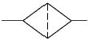
- 필터
- 드레인 배출기
- 가열기
- 온도 조절기
(정답률: 알수없음)
78. 실린더 입구측에 유량제어밸브와 체크밸브를 붙여 단(單)로드 실린더의 전진행정만을 제어하고 후진행정에서 피스톤측으로부터 귀환되는 압유는 체크밸브를 통하여 자유로이 흐를수 있도록 한 속도제어 회로인 것은?
- 클램프 회로
- 미터 인 회로
- 시퀜스 회로
- 미터 아웃 회로
(정답률: 알수없음)
79. 석유기관을 가솔린기관과 비교한 특징이다. 가장 거리가 먼 항목은?
- 연료의 기화상태가 나쁘다.
- 같은 크기의 가솔린기관에 비하여 출력이 낮다.
- 압축비가 낮다.
- 회전속도가 빠르며 열효율이 좋다.
(정답률: 알수없음)
80. 유압장치의 특징에 대하여 설명한 것 중 틀린 것은?
- 유압 작동유의 오염에 민감하다.
- 압력의 전달 속도가 매우 느리다.
- 작업요소의 무단 변속이 가능하다.
- 작업요소의 운동은 온도 변화에 민감하다.
(정답률: 알수없음)
5과목: 건설기계일반 및 플랜트배관
81. 지게차를 포크(fork)나 어태치먼트(attachment)에 의해 분류한 것 중에 포크의 길이를 길게 하여 길이가 긴 각재, 형강, 파이프 등의 안전한 운전에 적당한 것은?
- 포크 무버(fork mover)
- 폴 캐리어(pole carrier)
- 크래들 포크(cradle fork)
- 스윙 시프트(swing shift)
(정답률: 알수없음)
82. 무한궤도식 건설기계의 주행장치가 아닌 것은?
- 구동륜(sprocket)
- 프런트 아이들러(front idler)
- 트랙 롤러(track roller)
- 클러치 요크(clutch york)
(정답률: 알수없음)
83. 탄소(C)와 더불어 주철 성질을 조절하는 데 가장 큰 영향을 미치는 성분 원소는?
- Mn
- P
- Si
- S
(정답률: 알수없음)
84. 공작물을 신속히 교환할 수 있도록 되어 있으며, 고정력이 작용력에 비해 매우 큰 클램프는?
- 쐐기형 클램프
- 캠 클램프
- 토글 클램프
- 나사 클램프
(정답률: 알수없음)
85. 불도우저에 달려있는 토크 콘버터의 특징에 관하여 기술한 내용 중 틀린 것은?
- 유체에 의한 간접 결합이므로 각부의 수명이 연장된다.
- 부하에 따라 자동적으로 변속작용이 된다.
- 기동(起動)토크가 크므로 엔진의 시동이 용이하다.
- 작업중에 부하가 걸려도 변속이 가능하다.
(정답률: 알수없음)
86. 기중기(crane)의 종류가 아닌 것은?
- 드래그라인(drag line)장치 기중기
- 클램셸(clam shell)장치 기중기
- 셔블(shovel)장치 기중기
- 하이마스트(high mast)장치 기중기
(정답률: 알수없음)
87. 빌트업에지를 감소시키기 위한 방법이 아닌 것은?
- 마찰계수가 작은 초경합금 공구를 사용한다.
- 좋은 윤활유를 사용한다.
- 공구 윗면 경사각을 크게 한다.
- 저속으로 절삭 작업을 한다.
(정답률: 알수없음)
88. 숫돌을 사용하여 가공하는 방법은?
- 버니싱(burnishing)
- 슈퍼 피니싱(superfinishing)
- 방전가공(放電加工)
- 초음파 가공(超音波加工)
(정답률: 알수없음)
89. 로우더(loader)에서 올바른 작업량의 산정식은? (단, Q : 운전시간당 작업량, q : 버킷 용량, k : 버킷 계수, E : 작업효율, f : 토량환산계수, Cm : 사이클 타임)
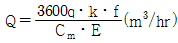
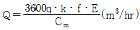
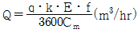
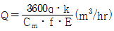
(정답률: 알수없음)
90. 도우저의 종류가 아닌 것은?
- 크레인 도우저
- 스트레이트 도우저
- 틸트 도우저
- 앵글 도우저
(정답률: 알수없음)
91. 내경 측정에만 이용되는 측정기는?
- 실린더 게이지
- 버니어 캘리퍼스
- 측장기
- 블록 게이지
(정답률: 알수없음)
92. 파일을 박을 때에 드롭해머나 디젤해머 등을 사용하며, 그 부수 작업장치는 크레인 붐에 설치하게 되는 기계의 명칭은?
- 콘크릿 버킷(concrete bucket)
- 파일 드라이버(pile driver)
- 마그넷(magnet)
- 어드 드릴(earth drill)
(정답률: 알수없음)
93. 강(鋼)의 자기(磁氣)변태점은?
- A1 변태점
- A2 변태점
- A3 변태점
- A4 변태점
(정답률: 알수없음)
94. 콘크리트 피니셔(Concrete finisher)의 규격 표시로서 맞는 것은?
- 콘크리트의 시간당 생산량
- 콘크리트 탱크의 용량
- 콘크리트를 포설할 수 있는 표준 너비
- 노반재료의 표준 부설두께
(정답률: 알수없음)
95. 고도로 전리(電離)된 가스체의 아크를 이용한 용접이며, 빠른 용접속도, 아크의 안정성, 용접폭이나 열영향 범위가 좁고 용입이 깊은 용접은?
- 탄산가스 아크 용접(CO2gas arc welding)
- 텅스텐 불활성 가스용접(TIG welding)
- 금속 불활성 가스용접(MIG welding)
- 플라즈마 젯 용접(Plasma jet welding)
(정답률: 알수없음)
96. 판금가공에서 스프링백(spring back)을 가장 옳게 설명한 것은?
- 스프링의 피치를 나타낸다.
- 판재를 굽혔을 때 굽힌 부분이 활모양으로 되는 현상이다.
- 스프링에서 장력의 세기를 나타내는 척도이다.
- 판재를 굽힐 때, 하중을 제거하면 탄성에 의해 처음 상태로 약간 복귀되는 현상이다.
(정답률: 알수없음)
97. 불도우저의 슈(shoe)에 대한 용도를 설명한 것 중 틀린것은?
- 고무제 슈 : 노면보호 및 소음방지를 할 수 있다.
- 평활 슈 : 도로파손을 막을 수 있다.
- 설상용 슈 : 눈이나 얼음판의 현장작업에 적합하다.
- 습지용 슈 : 접지면적을 작게하여 연약지반에서 작업하기 좋다.
(정답률: 알수없음)
98. 아스팔트 포장의 끝마무리 작업에 사용되는 장비는?
- 댐퍼
- 진동 롤러
- 탠덤 롤러
- 탬핑 롤러
(정답률: 알수없음)
99. 가열 맞춤에 있어서 원통의 바깥지름을 D, 구멍의 안지름을 d, 재료의 허용응력을 σ , 탄성계수를 E 라 하면 d의 크기는 다음 어느 식으로 결정할 수 있는가?
(정답률: 알수없음)
100. 연삭숫돌의 3요소는?
- 구멍지름, 연삭입자, 지름과 두께
- 연삭입자, 결합제, 지름과 두께
- 기공, 조직, 결합도
- 결합제, 연삭입자, 기공
(정답률: 알수없음)
자중력 = 부피 × 비중량 × 중력가속도
= (π/4) × (지름/2)² × 길이 × 비중량 × 중력가속도
= (π/4) × (6/2)² × 150 × 7.7×10⁴ × 9.81
= 1.123×10⁶ N
강철선의 단면적은 A = (π/4) × (지름/2)² = 28.27 mm² 이다.
강도는 단위 면적당 하중인 σ = 자중력 / 단면적 = 1.123×10⁶ / 28.27 = 3.98×10⁴ N/mm² 이다.
강도에 대응하는 변형은 훅의 법칙에 따라 다음과 같이 계산할 수 있다.
σ = E × ε
ε = σ / E = 3.98×10⁴ / 200×10⁹ = 1.99×10⁻⁴
강철선의 길이 방향으로의 처짐량은 다음과 같이 계산할 수 있다.
처짐량 = (자중력 × 길이³) / (3 × E × A)
= (1.123×10⁶ × 150³) / (3 × 200×10⁹ × 28.27)
= 4.33 mm
따라서, 정답은 "4.33" 이다.